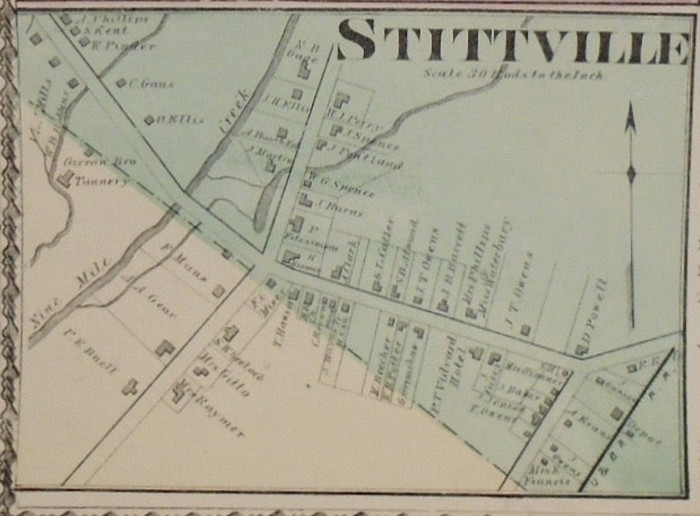
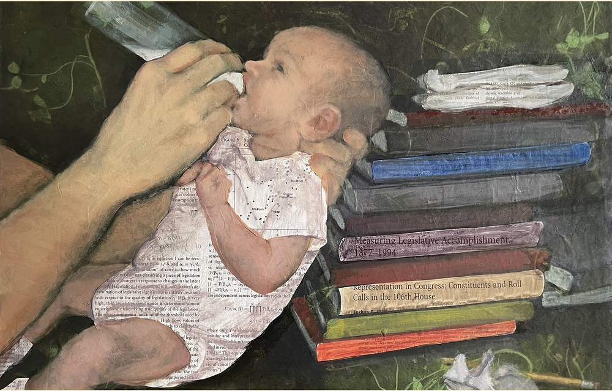
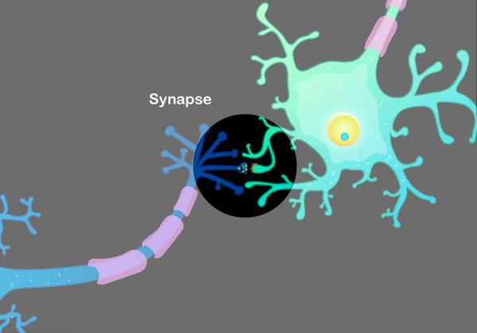

Personal

I grew up in Stittville, a town of about 320 people in rural upstate New York, near Utica. My father was a land surveyor and my mother a school nurse. I grew up in scouting, earning the rank of Eagle Scout, and graduating from Holland Patent Central High School.
Thanks to hard work, some luck, a Pell Grant, and a Xerox Award, I made it to the University of Rochester. There, a professor wrote “you have a talent for abstract analytical thinking” on top of one of my exams and took me on for independent summer research, which set me on the path to Stanford. I spent time interning at a startup in the Valley during graduate school, but my passion for teaching, research, and learning kept me in academia.

I met my wife, Sarah, in college where she trained as a chemist, but when our daughter Ella was born with significant special needs she became a full-time caregiver, and in time returned to a passion for art. She is now an artist whose murals appear around Nashville, including at Vanderbilt’s Susan Gray School, Saddle Up, GEODIS Park, the Nashville airport, and the new Titans stadium, with a studio at the Arcade downtown. Ella is now a teenager, and our son, Alexander, is in college. They are, by far, my most important, consequential, and valuable “publications.”

Ella’s diagnosis is SYNGAP1, a rare genetic condition that disrupts a protein the brain’s synapses depend on. It shapes our family’s days in ways large and small, and it keeps teaching me what truly matters: success is measured in many ways, gratitude and humility help ground oneself, and it is important to enjoy the moment rather than always looking ahead.